Previous work:
- Martin, R R et.al. (1990) - The paper presents a theoretical basis for computation of swept volumes by solid objects in 3 dimensonal space using envelope theory from differential geometry.
- Abdel-Malek K et.al. (2000) - The paper presents a practical approach on how to represent swept volume of implicit surfaces using Jacobian rank deficiency condition.
All the coding required for computations and plotting the graphs are carried out in symbolic manipulator "Maple" as the computations invlove derivations and simultaneous solving of trignometric equations.
Description of work: I have tried to implement technique presented in a paper of Abdel-Malek K et.al. (2000),
On Swept volume formulation: Implicit surfaces. The paper establishes a method using Jacobian rank deficiency
conditions for calculating swept volumes. The formulaton is described below briefly.
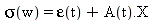
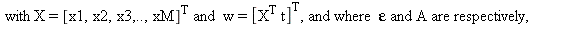

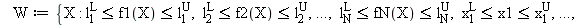
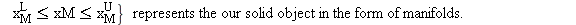
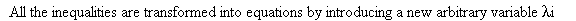
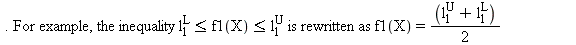
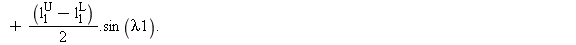
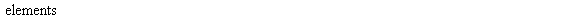
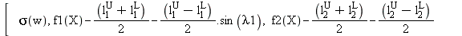
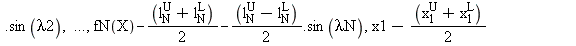
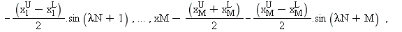
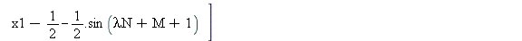
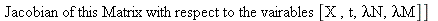
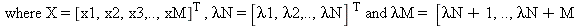
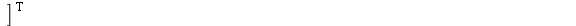

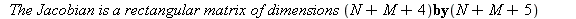
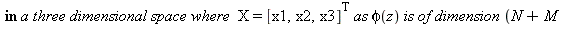
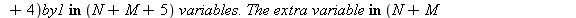
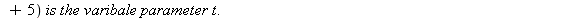
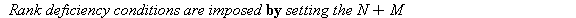
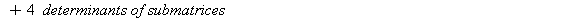
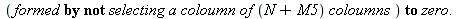
Results:
The robot can be represented in the form of simple three dimensional objects like Spheres,Cylinders and Cubes.
Sample representations of a robot are given below.
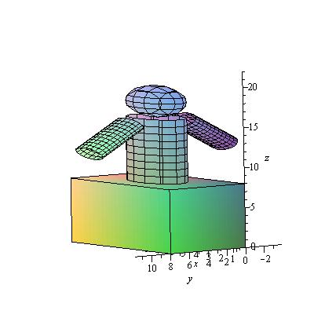 
Initially the method has been applied to a simple solid cylinder and below is set of first two singular surfaces obtained.
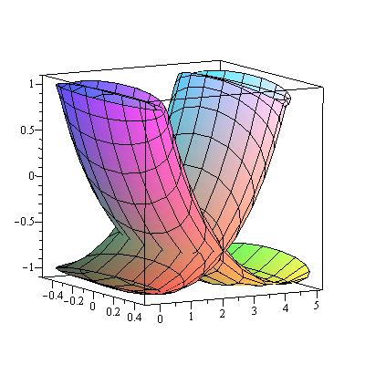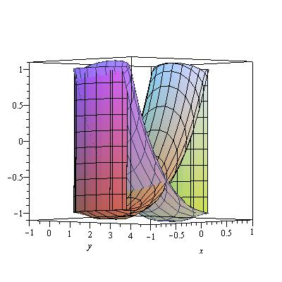
I was not able to render the swept volume of the robot configurations presented above, due to difficulty I faced in converting the solutions
of simultaneous equations into plots directly without manual intervention.
Below are the maple worksheets corresponding to the Sphere, Cylinder and Cube which will output the singular surface solutions.
Maple procedure which outputs solutions for a Swept Sphere
Maple procedure which outputs solutions for a Swept Cylinder
Maple procedure which outputs solutions for a Swept Cube
Analysis of work:
Meeting goals: My goals have been partially met. I was able to compute the singular surfaces which when combined give the swept volume of the object. However, I was not able to render the results for the composite object as a whole as I was not able to program the part where solutions of the equations are converted to plots directly. Hence, I was able to provide the singular surfaces for only one simple component(cylinder) which was rendered with manu.
Future work: The future work on this topic can include the concept of generating the swept volume when components of the object are in motion with object as a frame of reference like the case of robot which moves on wheeled platform with one or more articulated arms.